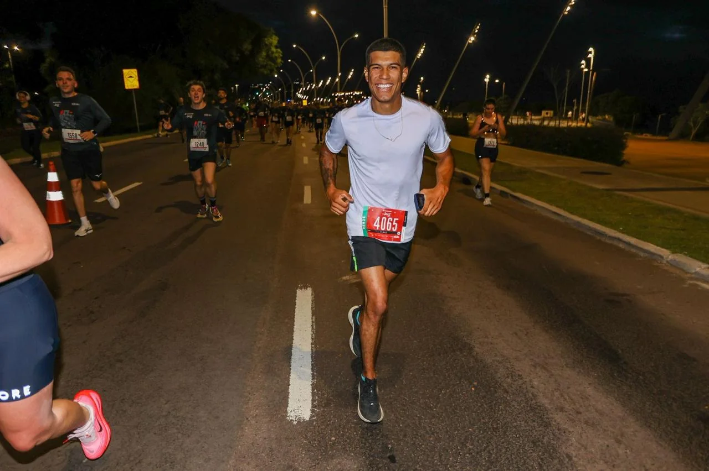
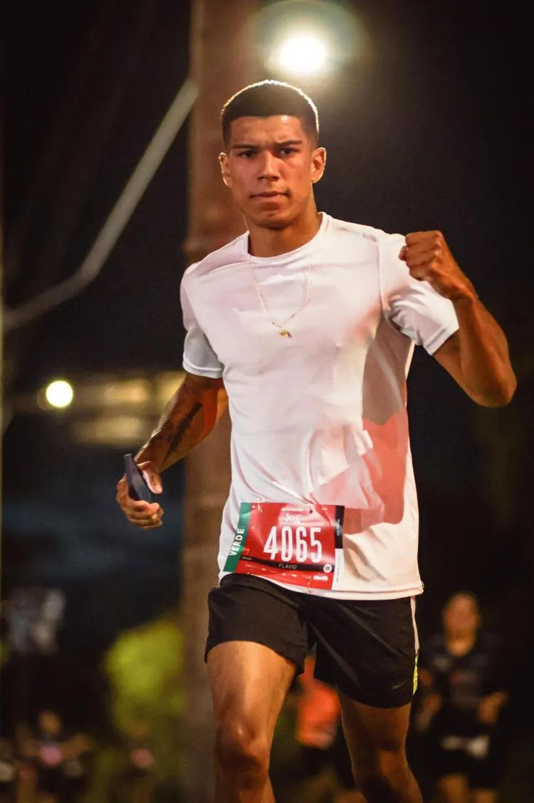
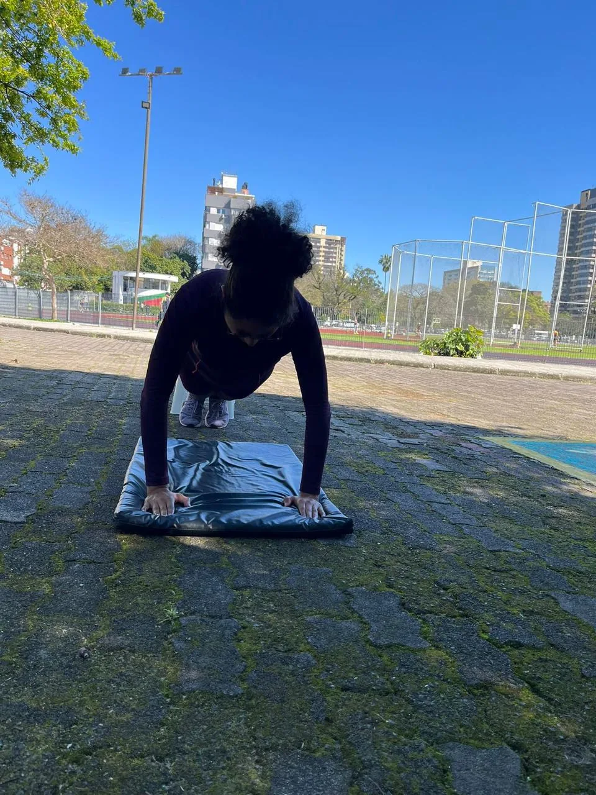
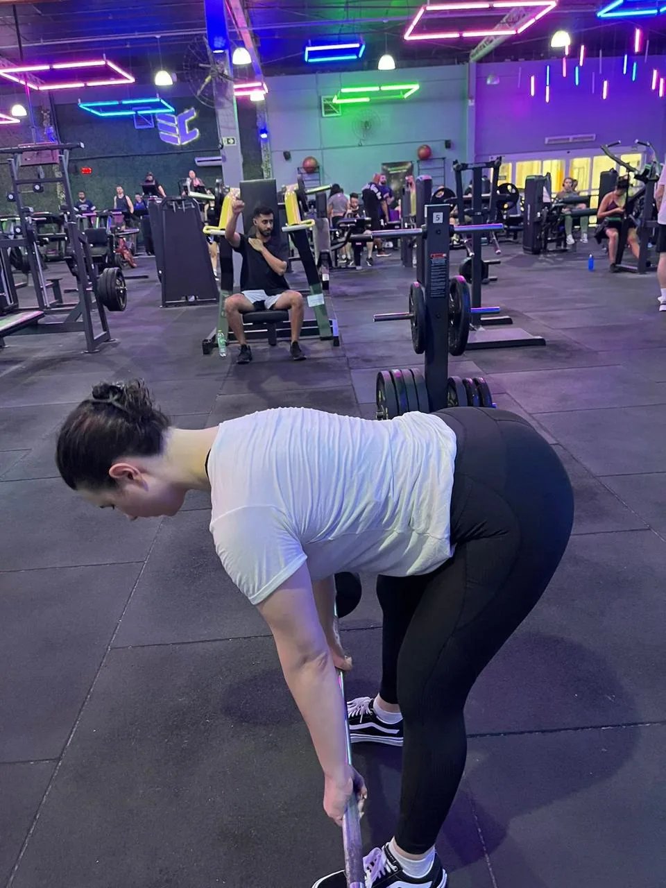
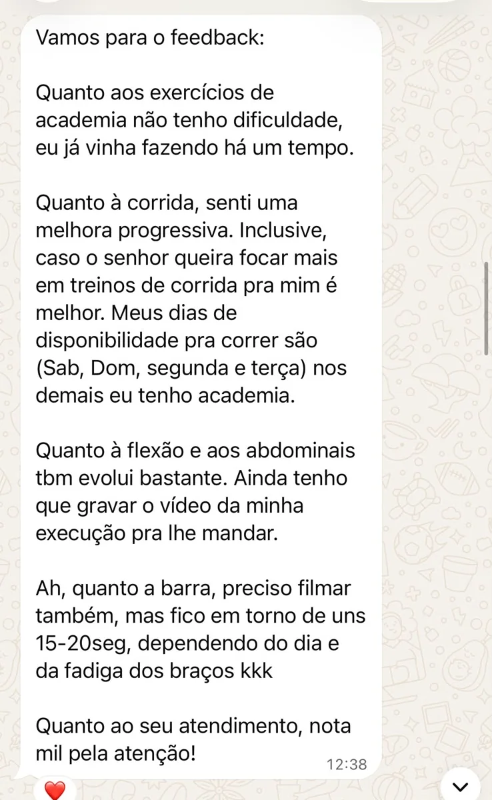

01
Consultoria de treino
Planejamento e acompanhamento online para conectar seus objetivos a uma rotina de treino possível.

TREINO PERSONALIZADO · PREPARAÇÃO PARA TAF
Conheça meu trabalho, veja registros de treino e leia experiências reais de alunos. Se o seu objetivo é evoluir no treino ou se preparar para o TAF, vamos conversar.
@fbarbosa_treinador
01 / SOBRE A CONSULTORIA
Flávio BarbosaTreinador · consultoria online e preparação para TAF
Sou Flávio Barbosa. Acredito em um treino que começa pela escuta: seus objetivos, seu ponto de partida e o que cabe na sua rotina.
Meu trabalho reúne planejamento individual, orientação e atenção ao processo. Também atuo com preparação para TAF, um objetivo presente na jornada de alunos que compartilham suas experiências nesta página.
TRAJETÓRIA / CONHEÇA O FLÁVIO
Entre os treinos e as conquistas pessoais, estes são registros da minha trajetória. Formação e credenciais profissionais serão detalhadas após confirmação.
Gosto de estar em movimento e de acompanhar pessoas que têm objetivos próprios. Nesta página, você conhece um pouco do meu trabalho, vê alunos em atividade e encontra relatos que eles compartilharam.
Leia os relatos02 / O QUE FAZ SENTIDO PARA VOCÊ
Do primeiro planejamento aos ajustes do treino, a consultoria conecta seu objetivo às possibilidades da sua rotina.
Planejamento e acompanhamento online para conectar seus objetivos a uma rotina de treino possível.
Uma estrutura de treino que considera seu nível, sua rotina e os recursos disponíveis para você.
Exercícios voltados a força, mobilidade e condicionamento, organizados em um planejamento individual.
Entendimento do seu perfil e dos seus objetivos para definir o ponto de partida e a estratégia de treino.
Preparação para TAF
O teste de aptidão física pede planejamento alinhado às exigências do edital e ao seu ponto de partida. Converse comigo sobre a prova, sua rotina e o que precisa desenvolver.
Conversar sobre meu TAFO QUE ENTRA NA CONVERSA
ATIVIDADES / POSSIBILIDADES DE TREINO
Um planejamento pode combinar diferentes atividades. A escolha depende do seu objetivo, da sua experiência e dos recursos disponíveis.

MOVIMENTO COM DIREÇÃO
Exercícios resistidos, com equipamentos ou peso corporal, podem compor o planejamento conforme seu objetivo.
A preparação para correr e sustentar o esforço pode ser organizada de acordo com o objetivo e o nível atual.
Movimentos e amplitudes podem ser trabalhados como parte do planejamento individual.
Exercícios integrados podem reunir diferentes capacidades físicas em uma mesma proposta de treino.
Essas são possibilidades de atividades. Os exercícios e a organização do seu treino são definidos individualmente.
03 / UM PASSO DE CADA VEZ
O caminho começa com uma conversa e se desenvolve com planejamento, acompanhamento e ajustes.
Conte o que você busca e tire suas dúvidas sobre a consultoria.
Seu perfil, sua experiência e suas necessidades orientam o início.
A estratégia de treino é organizada considerando seu objetivo e sua rotina.
O processo de treino é acompanhado para orientar os próximos passos.
O planejamento recebe ajustes conforme seu desempenho e seus objetivos.
CONTEÚDO / PREPARAÇÃO FÍSICA
Alguns pontos para observar ao pensar em TAF, corrida e força. O plano é definido individualmente.
Cada teste tem exigências próprias. Vale olhar para elas antes de organizar a preparação.
Identifique as provas físicas previstas, os critérios e a data do seu TAF.
Leve essas informações para a conversa com o treinador. Elas ajudam a relacionar o objetivo ao seu momento atual, sem copiar o plano de outra pessoa.
Técnica, força e a exigência específica do teste precisam ser consideradas.
A forma de execução aceita na avaliação pode variar conforme o edital.
Treinar com orientação permite discutir o movimento, sua experiência e uma progressão adequada, sem prometer um número de repetições.
O tempo final é um dado; o processo de treino reúne muitos outros.
Seu ponto de partida, a disponibilidade na semana e o feedback durante as atividades ajudam a orientar os ajustes.
Nos relatos compartilhados, alunos descrevem progresso na corrida e em outros exercícios; cada trajetória é individual.
04 / O TREINO EM MOVIMENTO
Registros de alunos em atividade. As imagens mostram momentos de treino; cada processo e cada resultado são individuais.

Registro de uma aluna durante uma atividade de treino. Cada planejamento parte da realidade de quem treina.

Registro de uma aluna em atividade na academia. O ambiente e os recursos disponíveis fazem parte da conversa.
05 / EXPERIÊNCIAS QUE IMPORTAM
Comentários públicos e mensagens recebidas de alunos. São experiências individuais, sem promessa de resultado para outras pessoas.
Fui aprovada no TAF do meu concurso com ele, e seguimos evoluindo até hoje!
Esse é o melhor que tem. Aprovei no TAF treinando com ele!
Indico muito! Mudou totalmente meus resultado
MENSAGENS / RELATOS REAIS
Toque em uma imagem para ler a captura em tamanho maior.

SEU PRÓXIMO PASSO
Comece com uma conversa. Conte sua rotina e o que você quer alcançar.
06 / SEM DÚVIDAS NO CAMINHO
Ainda ficou alguma dúvida?
Converse diretamente com Flávio.
A proposta é uma consultoria de treino online: primeiro entendemos seu objetivo, depois conversamos sobre avaliação, planejamento e acompanhamento. Os detalhes do atendimento são combinados diretamente com Flávio pelo WhatsApp.
Conte quais espaços e equipamentos você tem disponíveis. Essa informação ajuda a entender as possibilidades do planejamento e o que faz sentido para seu objetivo.
Sim. O planejamento considera seus objetivos, sua experiência, sua rotina e os recursos disponíveis. Esses pontos são conversados antes de definir a estratégia.
Os canais, a frequência de contato e o formato das orientações são combinados com Flávio. Converse pelo WhatsApp para conhecer os detalhes antes de contratar.
O planejamento considera as exigências do edital, sua condição atual e sua rotina. Envie as informações do teste pelo WhatsApp para conversar sobre o caminho mais adequado.
Clique em um botão de WhatsApp da página. A conversa abrirá com uma mensagem inicial pronta; você pode editar a mensagem e enviá-la quando quiser.
A proposta apresentada nesta página é online. Converse com Flávio para entender a organização do atendimento e como o planejamento se adapta ao local onde você treina.
07 / VAMOS CONVERSAR
Não precisa ter todas as respostas.
Conte seu objetivo e vamos conversar sobre o caminho.
FALE COM FLÁVIO BARBOSA
Falar pelo WhatsApp+55 (51) 99630-2202O botão abre uma conversa no WhatsApp.
A mensagem só será enviada por você.
Esta página não usa formulários, cookies de rastreamento ou analytics. Ao clicar no contato, você acessa o WhatsApp, um serviço externo sujeito à sua própria política de privacidade. O site não envia mensagens automaticamente.